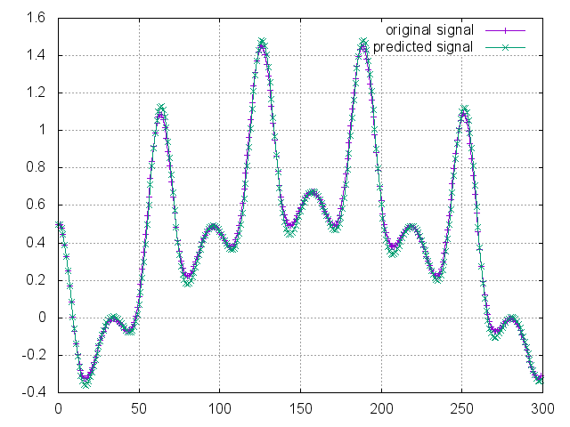

線形予測分析等とも言及される。
英語版で決定的に簡単な資料はここで見れます。ここの解説はその日本語訳以下の何かです。英語が読める人はそっちを見たほうが絶対早いです。
ここよりも良い資料が有ります：（人工知能に関する断創録）
アルゴリズムの導出
問題設定
時間について離散化した信号が\(y_{0}, y_{1}, ..., y_{n}\)として得られたとする。ここで、\(y_{n}\)を直前の\(y_{i}\ (i=0,...,n-1)\)によって予測する事を考える。
予測にあたって、線形予測では\(k\)個の係数\(a_{1},...,a_{k}\)を用いた単純な線形結合
によって\(y_{n}\)を近似する：
（係数に負号\(-\)が付いているのは、システムのフィードバック係数として捉えた時は負を付けるのが常識となっているからと考えられる。全ての係数の符号を反転させれば通常の和に戻るので、以下の導出にとって本質的な問題にならない。）
予測の誤差は、全ての\(n\)における二乗誤差の和\(E\)によって測る：
ここで\(a_{0} = 1\)と定義すると、
とまとめられる。後は、この\(E\)を最小化するように係数\(a_{1},...,a_{k}\)を定めれば良い。
誤差の最小化
偏微分
誤差の最小化を考える。常套手段ではあるが、\(E\)を\(a_{j} \ (j=1,...,k)\)によって偏微分し、その結果を\(0\)とおいて解くことを考える。まず、\(E\)の偏微分は、
ここで、\(R_{l}\)を次の式で定義する：
（自己相関 という。）\(R_{l}\)を用いることで、偏微分の結果は、
と表せる。
次に、\(\displaystyle\frac{\partial E}{\partial a_{j}} = 0\ (j=1,...,k)\)とおいて解く事を考える。和の前に付いている係数\(2\)は両辺\(2\)で割ることで消すことが出来る。その上で\(j=1,...,k\)での式を並べてみると、
より、行列形式で
と表せられる。以下、
として、\(M\vec{a}_{k} = \vec{0}\)を解くことを考える。
Levinson-Durbin再帰（Levinson-Durbin recursion）へ
上までで求まった連立方程式\(M\vec{a}\_{k+1} = \vec{0}\)をもう少し整理していく。数値解法的には、\(M\)は正方行列にしておくのが望ましい。そこで、\(M\)の一番上の行に\([R_{0} R_{1} ... R_{k}]\)を追加すると、
と変形できる。よって、次の連立方程式を解くことに帰着できる：
この連立方程式を高速に解くアルゴリズムが、Levinson-Durbin再帰法である。以下、\(e_{k} = \sum_{i=0}^{k} a_{i} R_{i}\)とし、また行列\(N_{k}\)を次で定義する：
Levinson-Durbin再帰
このアルゴリズムは、数学的帰納法によく似ている：
- \(k=1\)の場合で係数を求める
- 一般の\(k\)で係数が求まったとし、その結果から\(k+1\)で係数を求める
（参考資料で筆者は、「Levinson-Durbin帰納法と言ったほうがいいんじゃないか」と書いてあった。）ここでは、1.および2.の場合の解をそれぞれ見ていく。
k=1の時
より、実際に\(N_{1}\vec{a}_{1}\)を計算してみると、
より、\(e_{1} = R_{0} + R_{1}a_{1}\)、及び\(R_{1} + R_{0}a_{1} = 0\)から\(a_{1} = -\displaystyle\frac{R_{1}}{R_{0}}\)と求められる。（\(R_{0} = \displaystyle\sum_{n=-\infty}^{\infty}y_{n}^{2} > 0\)より、至る所ゼロ除算の心配はない）
一般のkの時
仮定として、
が成立していたとする。\(k+1\)の時、行列\(N_{k+1}\)は
となり、\(N_{k}\)の行・列共に1つ増えた行列となる。
一方の\(\vec{a}_{k+1}\)は未知である。そこで、技巧的ではあるが次\(\vec{a}\_{k}\)を\(0\)を追加する事で拡張した次のベクトル\(\vec{u}\_{k+1}, \vec{v}\_{k+1}\)を用いる事を考える：
\(\vec{u}\_{k+1}, \vec{v}\_{k+1}\)は互いに要素を反転したベクトルである（互いに一次独立で有ることにも注目）。これら\(\vec{u}\_{k+1}, \vec{v}\_{k+1}\)を用いて\(N\_{k+1}\vec{u}\_{k+1}\)と\(N_{k+1}\vec{v}\_{k+1}\)を計算すると、まず\(N\_{k+1}\vec{u}\_{k+1}\)は
であり、もう一方の\(N\_{k+1}\vec{v}\_{k+1}\)は、\(N\_{k+1}\)が対称行列なので\(N\_{k+1}\vec{u}\_{k+1}\)の結果を反転したベクトルとなる：
そして、\(\vec{a}\_{k+1}\)は\(\vec{u}\_{k+1}\)と\(\vec{v}\_{k+1}\)の線形結合で表現できる：
これは、実際に\(N\_{k+1}(\vec{u}\_{k+1} + \lambda \vec{v}\_{k+1})\)を計算することで確かめられる：
ここで\(\lambda = - \displaystyle\frac{\sum_{j=0}^{k} a_{j} R_{k+1-j}}{e_{k}}\)とすれば、
となって\(e\_{k+1}\)が求まる。同時に右辺の結果を与える\(\lambda\)は唯一つしか存在しないので、この時の\(\vec{u}\_{k+1} + \lambda \vec{v}\_{k+1}\)は\(\vec{a}\_{k+1}\)と一致する。
アルゴリズム
以上の導出結果をまとめると、
\(k=1\)の時：
\begin{equation*} a_{1} = - \frac{R_{1}}{R_{0}} \ , \ e_{1} = R_{0} + R_{1}a_{1} \end{equation*}\(k\)が求まった時、\(k+1\)は：
ここで、
となる。
自己相関\(R_{l}\)は過去から未来までの無限の信号和になっているので現実の計算機では計算出来ない。実際には自己相関の代わりに次の標本自己相関\(\tilde{R}\_{l}\)を用いる：
補足
周波数特性の導出
近似式は誤差項\(e_{n}\)を用いて次の等式で書き表せる：
この式を両辺z変換すると、次の伝達関数を得る：
この結果は、予測誤差を入力することで出力音声が得られるシステムを表している。人間の声帯から発せられた音声を\(E(z)\)とすれば、この伝達関数は声道の共鳴する特性をモデル化していると考えることができる。共鳴が発生する周波数では伝達関数のパワー（振幅、ゲイン）が高くなり、この結果からフォルマント分析を行うことができる。
伝達関数の周波数特性を求めるには、z変換の結果に\(z=\exp(j\omega), (\omega=2\pi f:角周波数)\)を代入する：
標本自己相関の計算
標本自己相関は自分自身との相関を計算するので\(O(N^{2})\)の計算量があるが、ウィーナー・ヒンチンの定理（信号のパワースペクトラムは、その自己相関に等しい）を使って自己相関を計算すれば、実質FFTと同等の計算量\(O(N \log N)\)で抑えることもできる。但し、巡回畳み込みや、パワースペクトラムの平均処理を考慮する必要がある。
参考資料リスト
- LPCについて：東京大学 音情報処理論
- ウィーナー・ヒンチンの定理：京都大学 工業数学
実装
実装はC言語です（リファレンスはLLで書くべきだった…）
#include <stdio.h>
#include <math.h>
#include <stdlib.h>
#include <string.h>
#include <float.h>
/* （標本）自己相関の計算 */
static int
calc_auto_correlation(double *auto_corr, const double *data, const size_t num_sample, const size_t max_order);
/* Levinson-Durbin再帰計算 */
static int
levinson_durbin_recursion(double *lpc_coef, const double *auto_corr, const size_t max_order);
int main(void)
{
int num_sample = 300; /* サンプル数 */
int max_delay = 10; /* LPC係数の数 */
int i_sample, i_delay;
double *data = (double *)malloc(sizeof(double) * num_sample);
double *predict = (double *)malloc(sizeof(double) * num_sample);
double *auto_cor = (double *)malloc(sizeof(double) * (max_delay + 1));
double *coff = (double *)malloc(sizeof(double) * (max_delay + 1));
double error;
/* 波形の生成 */
for (i_sample = 0; i_sample < num_sample; i_sample++) {
data[i_sample] = sin(i_sample * 0.01) + 0.5 * cos(4.0f * sin(i_sample * 0.05));
}
/* 自己相関・Levinson-Durbin再帰計算 */
calc_auto_correlation(auto_cor, data, num_sample, max_delay + 1);
levinson_durbin_recursion(coff, auto_cor, max_delay);
/* 予測テスト */
for (i_sample = 0; i_sample < num_sample; i_sample++) {
if (i_sample < max_delay) {
/* 最初のmax_delayステップ分は元信号を単純コピー */
predict[i_sample] = data[i_sample];
} else {
/* 以降は予測 */
predict[i_sample] = 0.0f;
for (i_delay = 1; i_delay <= max_delay; i_delay++) {
predict[i_sample] -= (coff[i_delay] * data[i_sample-i_delay]);
}
}
}
/* 誤差計算・結果表示 */
error = 0.0f;
for (i_sample = 0; i_sample < num_sample; i_sample++) {
error += pow(predict[i_sample] - data[i_sample], 2);
printf("No:%d Data: %f Predict: %f \n", i_sample, data[i_sample], predict[i_sample]);
}
printf("Error : %f \n", sqrt(error / num_sample));
free(data); free(predict);
free(auto_cor); free(coff);
return 0;
}
static int levinson_durbin_recursion(double *lpc_coef, const double *auto_corr, const size_t max_order)
{
int delay, i_delay;
double lambda;
double *u_vec, *v_vec, *a_vec, *e_vec;
if (lpc_coef == NULL || auto_corr == NULL) {
fprintf(stderr, "Data or result pointer point to NULL. \n");
return -1;
}
/*
* 0次自己相関（信号の二乗和）が0に近い場合、入力信号は無音と判定
* => 予測誤差, LPC係数は全て0として無音出力システムを予測.
*/
if (fabs(auto_corr[0]) < FLT_EPSILON) {
for (i_delay = 0; i_delay < max_order+1; ++i_delay) {
lpc_coef[i_delay] = 0.0f;
}
return 0;
}
/* 初期化 */
a_vec = (double *)malloc(sizeof(double) * (max_order + 2)); /* a_0, a_k+1を含めるとmax_order+2 */
e_vec = (double *)malloc(sizeof(double) * (max_order + 2)); /* e_0, e_k+1を含めるとmax_order+2 */
u_vec = (double *)malloc(sizeof(double) * (max_order + 2));
v_vec = (double *)malloc(sizeof(double) * (max_order + 2));
for (i_delay = 0; i_delay < max_order + 2; i_delay++) {
u_vec[i_delay] = v_vec[i_delay] = a_vec[i_delay] = 0.0f;
}
/* 最初のステップの係数をセット */
a_vec[0] = 1.0f;
e_vec[0] = auto_corr[0];
a_vec[1] = - auto_corr[1] / auto_corr[0];
e_vec[1] = auto_corr[0] + auto_corr[1] * a_vec[1];
u_vec[0] = 1.0f; u_vec[1] = 0.0f;
v_vec[0] = 0.0f; v_vec[1] = 1.0f;
/* 再帰処理 */
for (delay = 1; delay < max_order; delay++) {
lambda = 0.0f;
for (i_delay = 0; i_delay < delay+1; i_delay++) {
lambda += a_vec[i_delay] * auto_corr[delay+1-i_delay];
}
lambda /= (-e_vec[delay]);
e_vec[delay+1] = (1 - lambda * lambda) * e_vec[delay];
/* u_vec, v_vecの更新 */
for (i_delay = 0; i_delay < delay; i_delay++) {
u_vec[i_delay+1] = v_vec[delay-i_delay] = a_vec[i_delay+1];
}
u_vec[0] = 1.0f; u_vec[delay+1] = 0.0f;
v_vec[0] = 0.0f; v_vec[delay+1] = 1.0f;
/* resultの更新 */
for (i_delay = 0; i_delay < delay+2; i_delay++) {
a_vec[i_delay] = u_vec[i_delay] + lambda * v_vec[i_delay];
}
}
/* 結果の取得 */
memcpy(lpc_coef, a_vec, sizeof(double) * (max_order + 1));
free(u_vec); free(v_vec);
free(a_vec); free(e_vec);
return 0;
}
static int calc_auto_correlation(double *auto_corr, const double *data, const size_t num_sample, const size_t max_order)
{
int i_sample, delay_time;
if (max_order > num_sample) {
fprintf(stderr, "Max order(%zu) is larger than number of samples(%zu). \n", max_order, num_sample);
return -1;
}
if (auto_corr == NULL || data == NULL) {
fprintf(stderr, "Data or result pointer point to NULL. \n");
return -2;
}
/* （標本）自己相関の計算 */
for (delay_time = 0; delay_time < max_order; delay_time++) {
auto_corr[delay_time] = 0.0f;
for (i_sample = delay_time; i_sample < num_sample; i_sample++) {
auto_corr[delay_time] += data[i_sample] * data[i_sample - delay_time];
}
}
return 0;
}
実験
実際に走らせた結果のグラフは以下。 
原信号が簡単すぎたのか、係数は少なめでも十分に予測できている。しかし、適当な係数の数の取り方を決める手法がないと、実信号で使い物になりそうにない。とりあえず、自己相関を使いこなしたN. Wiener is GOD.（結言）